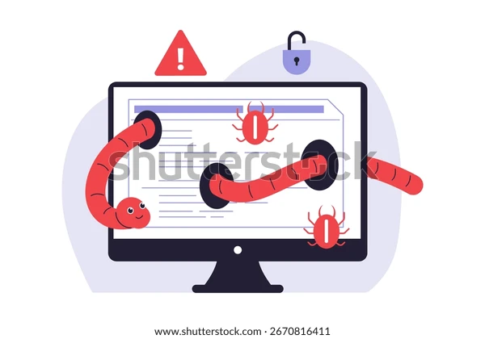

O que são Worms?
Worms, ou vermes digitais, são um tipo de malware capaz de se replicar automaticamente e se espalhar por redes sem a necessidade de anexar-se a um programa existente, como acontece com os vírus tradicionais.
Um worm digital se espalhando por dispositivos conectados.
Como Funcionam?
Após infectar um computador, o worm se multiplica e tenta se propagar para outros dispositivos conectados à mesma rede. Ele pode consumir muita largura de banda, causar lentidão nos sistemas e até derrubar redes inteiras.
Exemplos de Worms Famosos
- ILOVEYOU (2000): Espalhou-se por e-mail, causando bilhões em prejuízo.
- Code Red (2001): Explorava falhas em servidores web da Microsoft.
- WannaCry (2017): Um ransomware que se espalhou como worm, explorando vulnerabilidades em sistemas Windows.

Tela de bloqueio usada pelo WannaCry, um worm/ransomware.